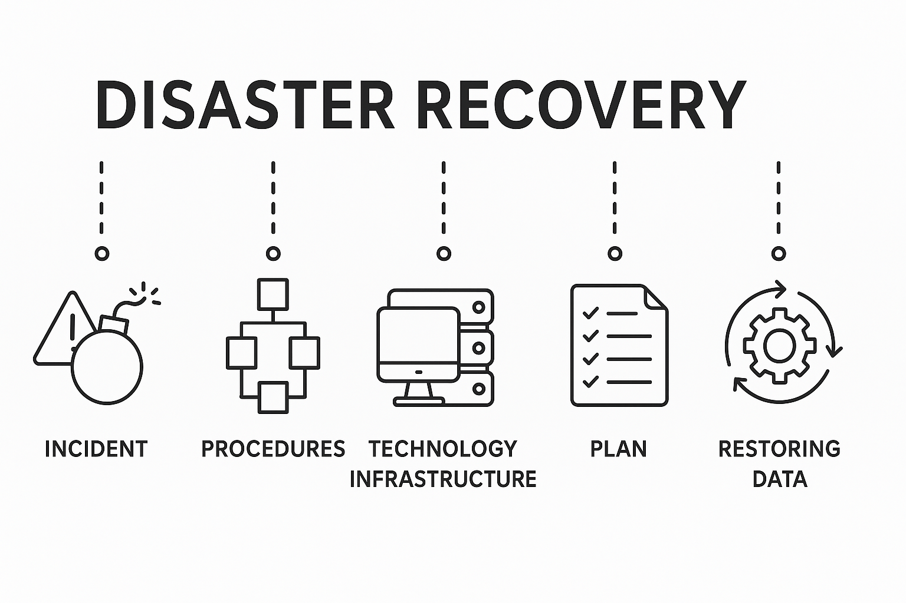

Data Protection & Recovery for Marketing Agencies
Comprehensive backup and disaster recovery solutions to safeguard your critical business data, client information, and creative work. Protect your agency from data loss, ransomware attacks, and system failures with reliable backup and recovery strategies.
Why Data Protection & Recovery Matters: Marketing agencies handle vast amounts of valuable data including client information, creative assets, campaign data, and business-critical files. Data loss can be devastating, resulting in lost client work, compliance violations, and business disruption. Comprehensive backup and disaster recovery solutions ensure your agency can recover quickly from any data loss event.
Automated Backup Solutions
Automated backup systems that protect your data without requiring manual intervention. Regular, scheduled backups ensure your critical files, client data, and creative work are protected continuously.
Backup Features:
- Automated Scheduling: Set-and-forget backup schedules that run automatically without manual intervention
- Incremental Backups: Efficient backups that only save changes since the last backup, reducing storage and time
- Multiple Backup Locations: Back up to local storage, cloud storage, or both for redundancy
- Backup Verification: Automated verification to ensure backups are successful and data is recoverable
- Retention Policies: Configurable retention periods to balance storage costs with recovery needs
Cloud Backup Services
Secure cloud-based backup solutions that protect your data off-site and provide access from anywhere. Cloud backups ensure your data is safe even if your office experiences a disaster.
Cloud Backup Benefits:
- Off-Site Protection: Data stored in secure data centers, protected from local disasters
- Scalable Storage: Easily scale backup storage as your data grows without hardware changes
- Encryption: Data encrypted in transit and at rest to protect sensitive information
- Geographic Redundancy: Data replicated across multiple data centers for maximum reliability
- Accessibility: Restore data from anywhere with internet access, even when office is inaccessible
Disaster Recovery Planning

Comprehensive disaster recovery plans that ensure your agency can recover quickly from major system failures, cyber attacks, or natural disasters. Minimize downtime and data loss with tested recovery procedures.
Disaster Recovery Services:
- Recovery Planning: Develop comprehensive disaster recovery plans tailored to your agency's needs
- Recovery Time Objectives: Define acceptable downtime and recovery timeframes for different scenarios
- Recovery Point Objectives: Determine acceptable data loss limits and backup frequency requirements
- Testing & Validation: Regular testing of recovery procedures to ensure they work when needed
- Documentation: Detailed recovery procedures documented for quick execution during emergencies
Ransomware Protection & Recovery
Specialized protection against ransomware attacks with immutable backups and rapid recovery capabilities. Ensure your agency can recover from ransomware without paying attackers or losing critical data.
Ransomware Protection Features:
- Immutable Backups: Backups that cannot be modified or deleted by ransomware attacks
- Versioning: Multiple backup versions allow recovery to points before ransomware infection
- Rapid Recovery: Fast recovery procedures to restore systems quickly after ransomware attacks
- Isolated Backup Storage: Backups stored separately from production systems to prevent infection
- Recovery Testing: Regular testing to ensure ransomware recovery procedures work effectively
File & Folder Recovery
Quick recovery of individual files and folders without full system restoration. Restore accidentally deleted files, recover previous versions, or retrieve files from specific points in time.
File Recovery Capabilities:
- Point-in-Time Recovery: Restore files from any backup point to recover previous versions or deleted files
- Granular Recovery: Recover individual files or folders without restoring entire systems
- Self-Service Recovery: User-friendly tools that allow team members to recover their own files
- Version History: Access to previous versions of files to recover from accidental changes or corruption
- Quick Recovery: Fast file recovery to minimize productivity impact from data loss
Business Continuity Solutions
Business continuity solutions that keep your agency operational even during disasters or system failures. Minimize downtime and ensure client work continues with redundant systems and failover capabilities.
Business Continuity Features:
- Failover Systems: Redundant systems that automatically take over if primary systems fail
- Virtualized Recovery: Quickly restore systems as virtual machines for rapid recovery
- Remote Work Capability: Enable team members to work remotely during office disruptions
- Communication Continuity: Ensure phone and communication systems remain operational
- Recovery Prioritization: Prioritize recovery of critical systems and data to restore operations quickly